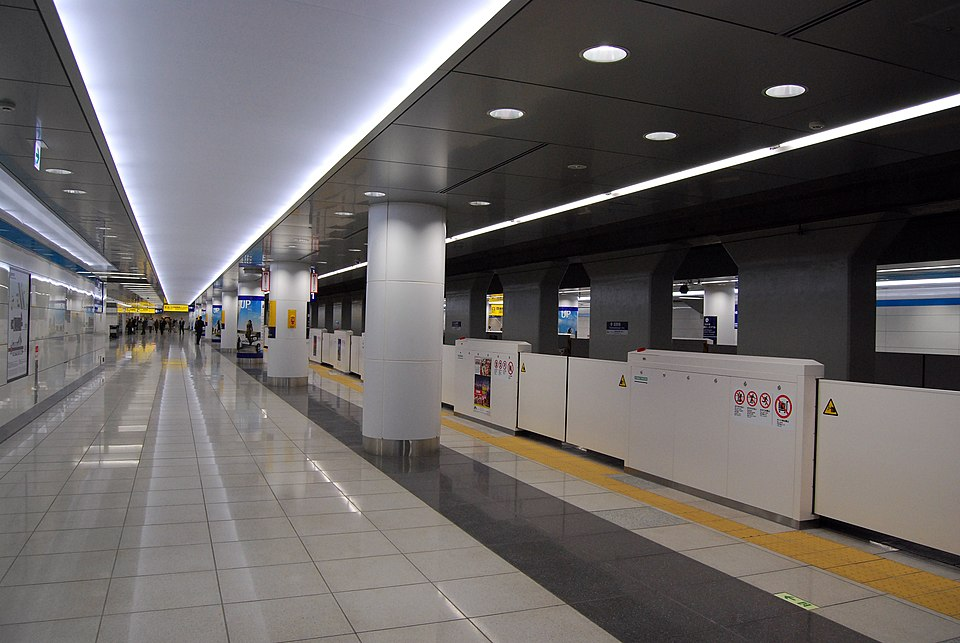
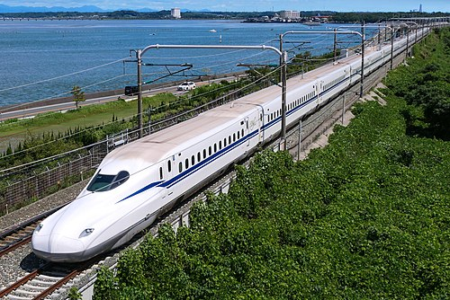
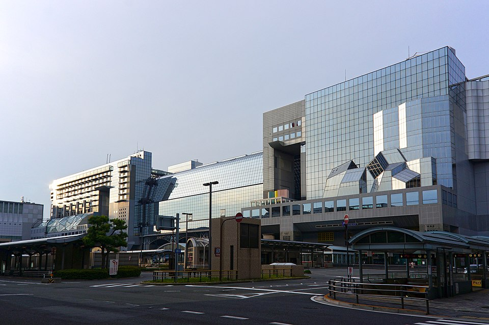
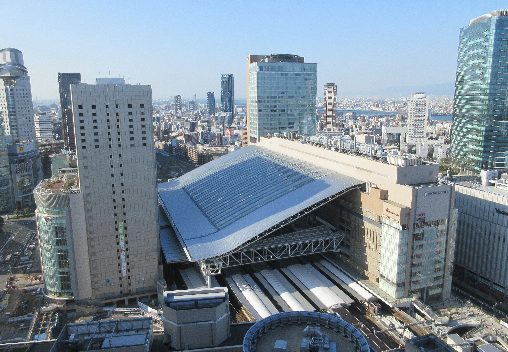

Обзор
JR Pass (7-дневный, 50,000 JPY взрослый, 25,000 JPY ребенок) не используется, так как его покупка увеличивает стоимость переездов примерно в 2.5 раза (133,325 JPY против 55,525 JPY). Все билеты покупаются индивидуально в автоматах или офисах JR (карты Visa/Mastercard принимаются).
18 июня 2025: Haneda Airport → APA Hotel Keikyukamata Ekimae (Токио)

Время прибытия : 18:00, Haneda Airport Terminal 3 (HND). Адрес: Haneda Airport, Ota-ku, Tokyo .Транспорт : Поезд Keikyu Airport Line (наиболее удобный и быстрый вариант для семьи с ребенком, прямой маршрут без пересадок).Маршрут :
Станция: Haneda Airport Terminal 3 (Keikyu Line, платформа 1).
Поезд: Keikyu Airport Express (направление Shinagawa/Asakusa, убедитесь, что поезд идет до Keikyu Kamata).
Остановка: Keikyu Kamata Station (5 остановок: Haneda Airport T1/T2, Anamori-inari, Otorii, Kojiya, Keikyu Kamata).
Время в пути: 13 минут.
Частота: Поезда ходят каждые 5–10 минут (в 18:00–19:00).
Расписание: Пример: 18:05, 18:10, 18:15. Проверьте точное время на Navitime .
Покупка билетов :
Место: Автоматы на станции Haneda Airport Terminal 3 (Keikyu Line, около выхода из зоны прилета, следуйте указателям «Trains»).
Процесс: Выберите английский язык → «Keikyu Kamata» → оплатите наличными (JPY) или картой Visa/Mastercard (автоматы Keikyu принимают карты).
Стоимость: 300 JPY (взрослый), 150 JPY (ребенок 6–11 лет), бесплатно (ребенок до 6 лет). Итого: 750 JPY (~4.5 EUR) за двоих взрослых и ребенка 12 лет.
Альтернатива: Используйте карту Suica/Pasmo (приобретите в автомате за 2,000 JPY, включая 500 JPY депозит). Приложите карту к турникету на входе и выходе.
Путь к отелю :
Банкоматы Visa/Mastercard :
Haneda Airport Terminal 3: 7-Eleven ATM (2-й этаж, зона прилета, 24/7, расположение ). Комиссия: ~220 JPY.
Keikyu Kamata Station: Lawson ATM (50 метров от East Exit, расположение , 24/7). Комиссия: ~220 JPY.
Примечания :
Поезда Keikyu в вечерний час пик могут быть переполнены, но багажное место есть у дверей.
Для ребенка: сиденья не гарантированы, держите ребенка за руку на платформе.
Альтернатива: Такси (15 мин, ~2,500 JPY, ~15 EUR), но поезд быстрее и дешевле.
Общая стоимость : 750 JPY (~4.5 EUR).
25 июня 2025: APA Hotel Keikyukamata Ekimae → Toyoko Inn Gotemba Ekimae (Готемба)

Время выезда : 08:00 (утро, чтобы прибыть к обеду).Транспорт : Поезд (JR Tokaido Shinkansen + местный поезд, наиболее комфортный вариант с минимумом ходьбы).Маршрут :
Этап 1: Keikyu Kamata → Shinagawa
Станция: Keikyu Kamata (Keikyu Main Line, платформа 2).
Поезд: Keikyu Airport Express (направление Shinagawa).
Остановка: Shinagawa Station (4 остановки: Omori, Heiwajima, Oimachi, Shinagawa).
Время в пути: 12 минут.
Частота: Каждые 5–7 минут (в 08:00–09:00).
Расписание: Пример: 08:05, 08:10, 08:15. Проверьте на Navitime .
Стоимость: 300 JPY (взрослый), 150 JPY (ребенок). Итого: 750 JPY (~4.5 EUR).
Этап 2: Shinagawa → Odawara
Станция: Shinagawa Station (JR Tokaido Shinkansen, платформы 21–24).
Поезд: JR Tokaido Shinkansen Kodama (направление Nagoya).
Остановка: Odawara Station (2 остановки: Shin-Yokohama, Odawara).
Время в пути: 35 минут.
Частота: Каждые 30 минут (в 08:30–10:00).
Расписание: Пример: 08:40, 09:10. Проверьте на JR East .
Стоимость: 3,870 JPY (взрослый, reserved seat), 1,935 JPY (ребенок). Итого: 9,675 JPY (~58 EUR).
Этап 3: Odawara → Gotemba
Станция: Odawara Station (JR Gotemba Line, платформа 5).
Поезд: JR Gotemba Line Local (направление Numazu).
Остановка: Gotemba Station (6 остановок: Yugawara, Manazuru, Nebukawa, Kozu, Kamonomiya, Gotemba).
Время в пути: 40 минут.
Частота: Каждые 20–30 минут.
Расписание: Пример: 09:30, 09:50. Проверьте на Navitime .
Стоимость: 670 JPY (взрослый), 335 JPY (ребенок). Итого: 1,675 JPY (~10 EUR).
Покупка билетов :
Keikyu Kamata → Shinagawa : Автоматы на Keikyu Kamata Station (английский интерфейс, оплата картой Visa/Mastercard или наличными). Или используйте Suica/Pasmo.Shinagawa → Odawara : Покупайте билеты в JR Ticket Office (Shinagawa Station, 2-й этаж, 07:00–21:00) или автоматах (английский интерфейс, карты Visa/Mastercard). Выберите reserved seats для комфорта.Odawara → Gotemba : Покупайте билеты в JR Ticket Office (Odawara Station, 1-й этаж, 07:00–20:00) или автоматах (карты Visa/Mastercard).
Путь к отелю :
Банкоматы Visa/Mastercard :
Keikyu Kamata Station: Lawson ATM (50 метров от East Exit, 24/7).
Shinagawa Station: 7-Eleven ATM (1-й этаж, около JR Ticket Office, 24/7, расположение ).
Gotemba Station: Japan Post ATM (100 метров от Fujisan Exit, 09:00–17:00, расположение ).
Примечания :
Shinkansen Kodama имеет просторные вагоны, багажное место и сиденья для ребенка.
Альтернатива: Автобус Fujikyu (Shinagawa → Gotemba, 2 часа, 2,000 JPY, но больше ходьбы до остановки).
Общая стоимость : 12,100 JPY (~72.6 EUR).
27 июня 2025: Toyoko Inn Gotemba Ekimae → M's Hotel Sanjo Omiya (Киото)

Время выезда : 08:00 (утро, скоростной поезд).Транспорт : JR Tokaido Shinkansen (прямой маршрут, максимальная скорость и комфорт).Маршрут :
Этап 1: Gotemba → Odawara
Станция: Gotemba Station (JR Gotemba Line, платформа 1).
Поезд: JR Gotemba Line Local (направление Kozu).
Остановка: Odawara Station (6 остановок: Kamonomiya, Kozu, Nebukawa, Manazuru, Yugawara, Odawara).
Время в пути: 40 минут.
Частота: Каждые 20–30 минут.
Расписание: Пример: 08:05, 08:25. Проверьте на Navitime .
Стоимость: 670 JPY (взрослый), 335 JPY (ребенок). Итого: 1,675 JPY (~10 EUR).
Этап 2: Odawara → Kyoto
Станция: Odawara Station (JR Tokaido Shinkansen, платформы 13–14).
Поезд: JR Tokaido Shinkansen Hikari (направление Shin-Osaka).
Остановка: Kyoto Station (2 остановки: Nagoya, Kyoto).
Время в пути: 2 часа 10 минут.
Частота: Каждые 30–60 минут.
Расписание: Пример: 09:10, 09:40. Проверьте на JR East .
Стоимость: 12,710 JPY (взрослый, reserved seat), 6,355 JPY (ребенок). Итого: 31,775 JPY (~190.7 EUR).
Этап 3: Kyoto → Omiya
Станция: Kyoto Station (Karasuma Line, платформа 1).
Поезд: Kyoto Subway Karasuma Line (направление Kokusaikaikan).
Остановка: Omiya Station (3 остановки: Kyoto, Shijo, Omiya).
Время в пути: 7 минут.
Частота: Каждые 5–10 минут.
Расписание: Пример: 11:30, 11:35. Проверьте на Navitime .
Стоимость: 220 JPY (взрослый), 110 JPY (ребенок). Итого: 550 JPY (~3.3 EUR).
Покупка билетов :
Gotemba → Odawara : Покупайте билеты в JR Ticket Office (Gotemba Station, 07:00–20:00) или автоматах (карты Visa/Mastercard).Odawara → Kyoto : Покупайте билеты в JR Ticket Office (Odawara Station, 1-й этаж, 07:00–20:00) или автоматах (английский интерфейс, карты Visa/Mastercard). Выберите reserved seats для комфорта.Kyoto → Omiya : Автоматы на Kyoto Station (Karasuma Line, английский интерфейс, карты Visa/Mastercard). Или используйте Suica/Pasmo.
Саморазогревающаяся еда :
Где купить: Lawson Convenience Store (50 метров от Gotemba Station, Fujisan Exit, расположение , 24/7). Что купить: Onigiri Heat-Up (рисовый треугольник с лососем/тунцом, 300–500 JPY), Hot Bento Box (рис, курица, овощи, 800–1,200 JPY). Итого: ~3,000 JPY (~18 EUR) за троих. Как работает: Тяните шнур, еда нагревается за 3–5 минут (инструкция на английском). Безопасно для поезда. Альтернатива: 7-Eleven (100 метров от Gotemba Station, 24/7, расположение ). Цены аналогичны.
Путь к отелю :
Банкоматы Visa/Mastercard :
Gotemba Station: Japan Post ATM (100 метров от Fujisan Exit, 09:00–17:00).
Odawara Station: 7-Eleven ATM (50 метров от West Exit, 24/7, расположение ).
Kyoto Station: MUFG ATM (Central Exit, 2-й этаж, 07:00–23:00, расположение ).
Примечания :
Shinkansen Hikari: просторные вагоны, багажное место, столики для еды.
Для ребенка: зарезервируйте места рядом (укажите в JR Ticket Office).
Саморазогревающаяся еда удобна, но в Shinkansen есть вагон-ресторан (1,000–2,000 JPY за блюдо).
Общая стоимость : 34,000 JPY (~204 EUR, включая метро; еда ~3,000 JPY/~18 EUR оплачивается отдельно).
5 июля 2025: M's Hotel Sanjo Omiya → Hotel Keihan Yodoyabashi (Осака)

Время выезда : 08:00 (утро, чтобы прибыть к обеду).Транспорт : JR Special Rapid Service (быстрый, прямой).Маршрут :
Этап 1: Omiya → Kyoto
Станция: Omiya Station (Karasuma Line, платформа 2).
Поезд: Kyoto Subway Karasuma Line (направление Takeda).
Остановка: Kyoto Station (3 остановки: Omiya, Shijo, Kyoto).
Время в пути: 7 минут.
Частота: Каждые 5–10 минут.
Расписание: Пример: 08:00, 08:05. Проверьте на Navitime .
Стоимость: 220 JPY (взрослый), 110 JPY (ребенок). Итого: 550 JPY (~3.3 EUR).
Этап 2: Kyoto → Osaka
Станция: Kyoto Station (JR Kyoto Line, платформы 8–10).
Поезд: JR Special Rapid Service (направление Osaka).
Остановка: Osaka Station (3 остановки: Takatsuki, Shin-Osaka, Osaka).
Время в пути: 28 минут.
Частота: Каждые 15–20 минут.
Расписание: Пример: 08:30, 08:45. Проверьте на Navitime .
Стоимость: 560 JPY (взрослый), 280 JPY (ребенок). Итого: 1,400 JPY (~8.4 EUR).
Этап 3: Osaka → Yodoyabashi
Станция: Osaka Station (Midosuji Line, платформа 1).
Поезд: Osaka Metro Midosuji Line (направление Namba).
Остановка: Yodoyabashi Station (2 остановки: Umeda, Yodoyabashi).
Время в пути: 5 минут.
Частота: Каждые 5–7 минут.
Расписание: Пример: 09:00, 09:05. Проверьте на Navitime .
Стоимость: 180 JPY (взрослый), 90 JPY (ребенок). Итого: 450 JPY (~2.7 EUR).
Покупка билетов :
Omiya → Kyoto : Автоматы на Omiya Station (Karasuma Line, английский интерфейс, карты Visa/Mastercard). Или используйте Suica/Pasmo.Kyoto → Osaka : Покупайте билеты в JR Ticket Office (Kyoto Station, Central Exit, 07:00–21:00) или автоматах (карты Visa/Mastercard).Osaka → Yodoyabashi : Автоматы на Osaka Station (Midosuji Line, английский интерфейс, карты Visa/Mastercard). Или используйте Suica/Pasmo.
Путь к отелю :
Банкоматы Visa/Mastercard :
Omiya Station: 7-Eleven ATM (50 метров от выхода, 24/7, расположение ).
Osaka Station: SMBC ATM (Central Exit, 1-й этаж, 07:00–23:00, расположение ).
Примечания :
JR Special Rapid: просторные вагоны, но сиденья не резервируются.
Для ребенка: держите за руку на пересадках в метро.
Альтернатива: Keihan Line (55 мин, 410 JPY), но требует пересадки.
Общая стоимость : 2,400 JPY (~14.4 EUR).
12 июля 2025: Hotel Keihan Yodoyabashi → Kansai Airport (Осака)
Время выезда : 06:00 (чтобы прибыть в аэропорт к 08:00).Транспорт : JR Haruka Express (прямой, быстрый, комфортный).Маршрут :
Этап 1: Yodoyabashi → Osaka
Станция: Yodoyabashi Station (Midosuji Line, платформа 2).
Поезд: Osaka Metro Midosuji Line (направление Nakamozu).
Остановка: Umeda Station (2 остановки: Yodoyabashi, Umeda).
Время в пути: 5 минут.
Частота: Каждые 5–7 минут.
Расписание: Пример: 06:00, 06:05. Проверьте на Navitime .
Стоимость: 180 JPY (взрослый), 90 JPY (ребенок). Итого: 450 JPY (~2.7 EUR).
Этап 2: Osaka → Kansai Airport
Станция: Osaka Station (JR Haruka Express, платформы 11–12).
Поезд: JR Haruka Express (направление Kansai Airport).
Остановка: Kansai Airport Station (1 остановка: Tennoji).
Время в пути: 50 минут.
Частота: Каждые 30 минут.
Расписание: Пример: 06:30, 07:00. Проверьте на JR East .
Стоимость: 2,330 JPY (взрослый, unreserved seat), 1,165 JPY (ребенок). Итого: 5,825 JPY (~35 EUR).
Путь в аэропорту :
Выход: Kansai Airport Station, Terminal 1 Exit.
Маршрут: Пешком 5 минут по крытому переходу в Terminal 1 (зона вылета, 3-й этаж).
Адрес аэропорта: Kansai International Airport, Izumisano, Osaka .
Магазины: Duty-free (Terminal 1, 3-й этаж, 07:00–23:00, косметика, сувениры, еда).
Покупка билетов :
Yodoyabashi → Osaka : Автоматы на Yodoyabashi Station (Midosuji Line, английский интерфейс, карты Visa/Mastercard). Или используйте Suica/Pasmo.Osaka → Kansai Airport : Покупайте билеты в JR Ticket Office (Osaka Station, Central Exit, 07:00–21:00) или автоматах (карты Visa/Mastercard).
Банкоматы Visa/Mastercard :
Yodoyabashi Station: Lawson ATM (50 метров от выхода, 24/7, расположение ).
Osaka Station: SMBC ATM (Central Exit, 1-й этаж, 07:00–23:00).
Kansai Airport: 7-Eleven ATM (Terminal 1, 2-й этаж, 24/7, расположение ).
Примечания :
Haruka Express: просторные вагоны, багажное место, идеально для аэропорта.
Для ребенка: unreserved seats дешевле, но берите reserved (2,850 JPY взрослый, 1,425 JPY ребенок) для комфорта.
Альтернатива: Airport Limousine Bus (1 час, 1,600 JPY взрослый, 800 JPY ребенок), но дольше из-за пробок.
Общая стоимость : 6,275 JPY (~37.7 EUR).
В начало